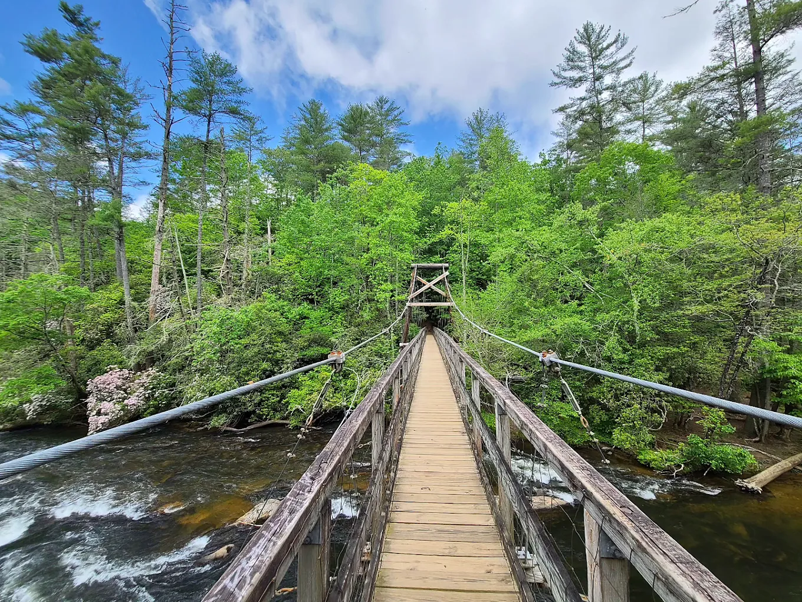

Pick your kind of adventure
Follow a trail to a waterfall, cast into cold mountain water, wander downtown Blue Ridge, or make a day the whole family will remember. It all starts close to the cabin.
Make the day your own
Our hand-picked guides focus on nearby places worth your time, with ideas for easy mornings, full adventure days, and everything between.

Hiking & Falls
Explore the Aska trails, hidden waterfalls, and the Toccoa River swinging bridge.
Hit the trail
Trout Fishing
Find public access points, promising local water, and experienced area guides.
Cast a line
Eat & Shop
Discover downtown dining, relaxed cafés, wineries, and one-of-a-kind shops.
Explore downtown
Family Fun
Ride the scenic railway, pick apples, mine for gems, or spend the afternoon on the river.
Plan a dayLeave room for cabin time. Some of the best hours here are the unplanned ones—coffee by the creek, a slow dinner, and an evening in the hot tub.